1. Attach the monitor base.

• If the computer is turned on you must turn it off before continuing.
w Do not plug-in or turn-on the power to the monitor until instructed to do so.
• The following illustrations are for your reference only. The location and available input and output jacks may vary depending on the purchased model.
o Avoid finger pressure on the screen surface.
1. Attach the monitor base.
Please be careful to prevent damage to the monitor. Placing the screen surface on an object like a stapler or a mouse will crack the glass or damage the LCD substrate voiding your warranty. Sliding or scraping the monitor around on your desk will scratch or damage the monitor surround and controls.
Open the box, unfold the front side of the box as illustrated to leave some room for stand and base attachment.
Remove the upper layer of the packaging, and take out the monitor stand and base.
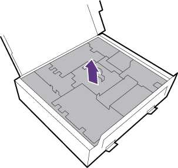
Align the cable holder with the monitor stand as illustrated. Push them together until they click and lock into place.
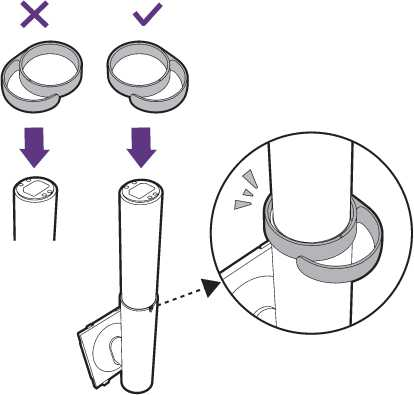
Attach the monitor stand to the monitor base as illustrated.
Tighten the thumbscrew on the bottom of the monitor base as illustrated.
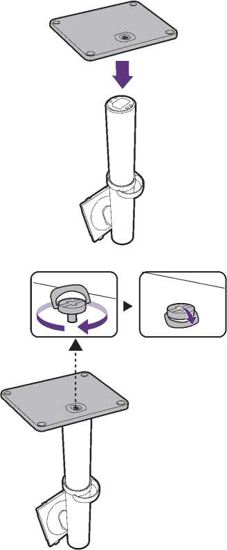
Open the foam wrap that protects the monitor.
Orient and align the stand arm with the monitor ( 1 ), push them together until they click and lock into place ( 2 ).
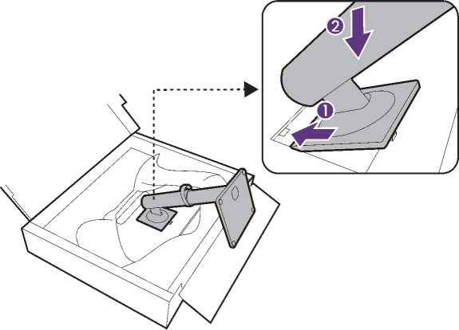
Take the monitor out of the box by holding the stand arm. Carefully lift the monitor, turn it over and place it upright on its stand on a flat even surface.
As the product is heavy, you may need assistance from another person to balance and ensure safety.
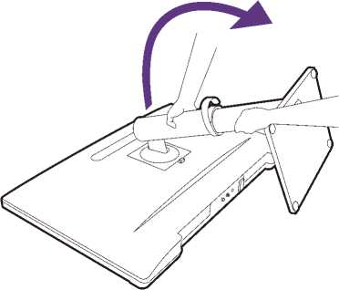
The video cables included in your package and the socket illustrations in this document may vary depending on the product supplied for your region.
Establish a video cable connection. Connect the monitor to your video source(s) via HDMI/USB-C™ cable(s) as illustrated.
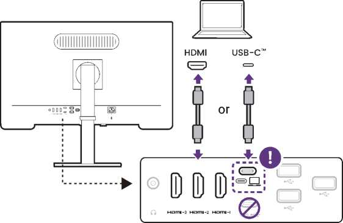
HDMI-1 and HDMI-2 cannot be used for PIP/PBP connection at the same time.
3. Connect the headphone.
The monitor comes with built-in speakers and is able to output audio via HDMI/USB-C™ ports.
You may connect headphones to the headphone jack found on the rear of the monitor if desired.
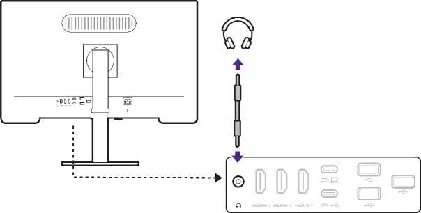
1. Connect the USB cable between the PC and the monitor (via the upstream USB-C™ port at the back). This upstream USB port transmits data between the PC and the USB devices connected to the monitor.
2. Connect USB devices via other USB ports (downstream) on the monitor. These downstream USB ports transmit data between the connected USB devices and the upstream port.
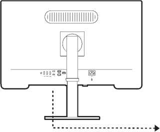
USB-C™
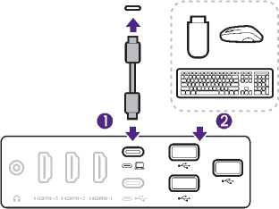
5. Place the monitor properly.
Place the monitor as desired after the cables have been connected properly. Move the monitor carefully by holding the lower part of monitor or the stand arm.
Finger pressure on the screen surface is prohibited. The screen may be damaged by excessive force.
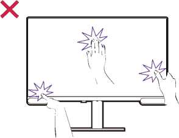
6. Adjust the viewing angle.
You may position the screen to the desired angle with monitor tilt, swivel, rotation, and height adjustment functions. Check the product specifications on the website for details.
Note that you should tilt and extend the monitor to its maximum height before rotate. See Rotating the monitor on page 29 for details.
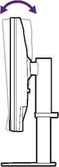
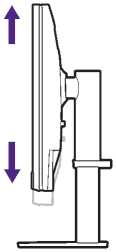
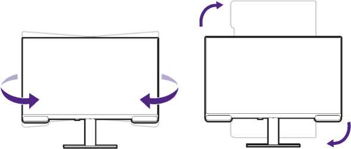
Your monitor is an edge-to-edge monitor and should be handled with care. Avoid finger pressure on the screen surface. Excessive force on the display is prohibited.
7. Connect to power.
Connect the power cord to the monitor and a power outlet.
Picture may differ from product supplied for your
8. Organize the cables.
Route the cables via the cable holder.
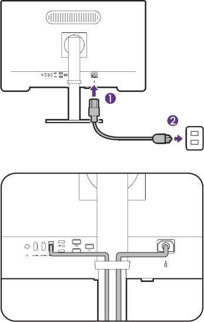
9. Turn on the power.
Turn on the monitor by pressing the power button on the monitor( 1 ).
Turn on the computer too. If you have multiple video sources, press the 5-way controller on the monitor to bring up the Display menu ( 2 ). Select one input to display, or proceed with PIP/PBP settings.
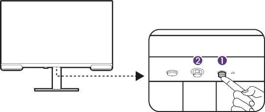
6
To extend the service life of the product, we recommend that you use your computer's power management function.
1. Power off the monitor.
Turn off the monitor and the power before unplugging the power cable. Turn off the computer before unplugging the monitor signal cable.
2. Prepare the monitor and area.
Lay the screen face down on a clean and well-padded surface. Or put the monitor back to the box that used to ship the product in the first place.
Please be careful to prevent damage to the monitor. Placing the screen surface on an object like a stapler or a mouse will crack the glass or damage the LCD substrate voiding your warranty. Sliding or scraping the monitor around on your desk will scratch or damage the monitor surround and controls.
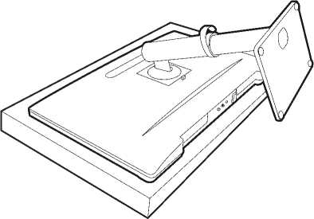
3. Remove the monitor stand.
While pressing and holding the quick release button, detach the stand from the monitor.
If the monitor stand is removed for mounting, see Mounting the monitor on your wall/monitor arm on page 31 and the instruction manual of your wall/arm mount bracket (purchased separately) for more information.
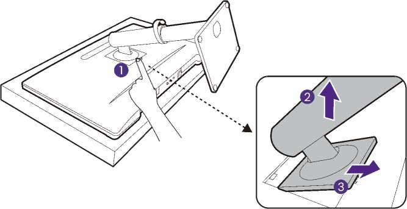
4. Remove the monitor base.
Release the screw on the bottom of the monitor base and detach the monitor base as illustrated.
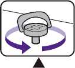
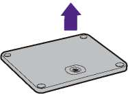
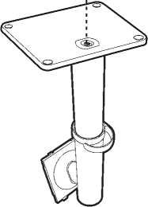
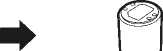
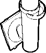
To adjust the monitor height, hold both the left and right sides of the monitor to lower the monitor or lift it up to the desired height.

• Avoid placing hands on the upper or lower part of the height-adjustable stand or at the bottom of the monitor, as ascending or descending monitor might cause personal injuries. Keep children out of reach of the monitor while performing this operation.
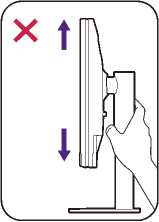
If the monitor has been rotated to portrait mode and height adjustment is desired, you should be noted that the wide screen will keep the monitor from being lowered to its minimum height.
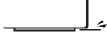
1. Pivot the display and OSD menu.
Before rotating the monitor with a portrait viewing orientation, the display has to be rotated 90 degrees.
Right-click the desktop and select Screen resolution from the popup menu. Select Portrait in Orientation, and apply the setting.
You should pivot the OSD menu to control the monitor easily.
Press < •? to bring up the main menu. Go to System > OSD Settings > Pivot. Select 90°.
Depending on the operating system on your PC, different procedures should be followed to adjust the screen orientation. Refer to the help document of your operating system for details.
2. Disconnect the cables
To avoid the risk of damaging the cables, always disconnect all cables before you rotate the monitor.
3. Fully extend the monitor and tilt it.
Gently lift the display up and extend it to the maximum extended position. Then tilt the monitor.
The monitor should be vertically extended to allow to rotate from landscape to portrait mode.
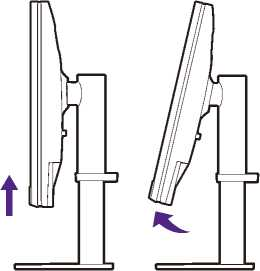
4. Rotate the monitor 90 degrees clockwise as illustrated.
To avoid the edge of the LCD display hitting the monitor base surface while it is being rotated, do tilt and extend the monitor to the highest position before you start to rotate the display. You should also make sure there are no obstacles around the monitor.
5. Adjust the monitor to the desired viewing angle.
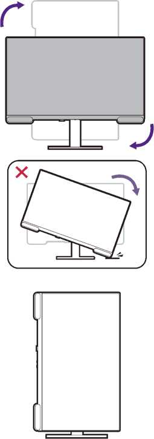
6. Organize the cables
Connect and route the cables via the cable holder.
You may position the screen to the desired angle with the monitor tilt, swivel, and height adjustment functions. Check the product specifications on the website for details.
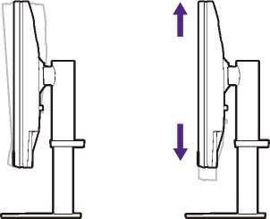
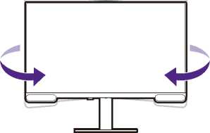
The back of your monitor has a VESA standard mount with 100mm pattern, allowing the installation of a wall mount bracket or a monitor arm (both purchased separately). Before starting to mount your monitor, please read the precautions carefully.
You can visit BenQ website for available monitor arms.
Precautions
• Install your monitor and monitor mounting kit on a wall/desk with flat surface.
• Ensure that the wall/tabletop material and the standard wall/arm mount bracket (purchased separately) are stable enough to support the weight of the monitor. Refer to the product specifications on the website for weight information.
• Turn off the monitor and the power before disconnecting the cables from the monitor.
1. Remove the monitor stand.
Lay the screen face down on a clean and well-padded surface. Detach the monitor stand as instructed in How to detach the stand on page 27.
2. Remove the screws on the back cover.
Use a cross-pointed screwdriver to release the screws that fixing the back cover to the monitor.The use of a magnetic-head screwd recommended to avoid of losing the
In case you intend t the future, please ke and screws somewher
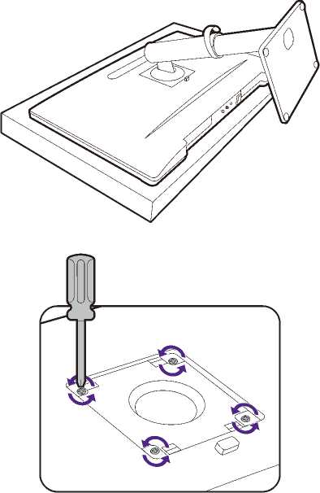
3. Follow the instruction you purchased to comp
Use four M4 x 10 mm screws to fix a VESA st ke sure
that all screws are tightened and secured prope or BenQ service
for wall mount installation and safety precautions.